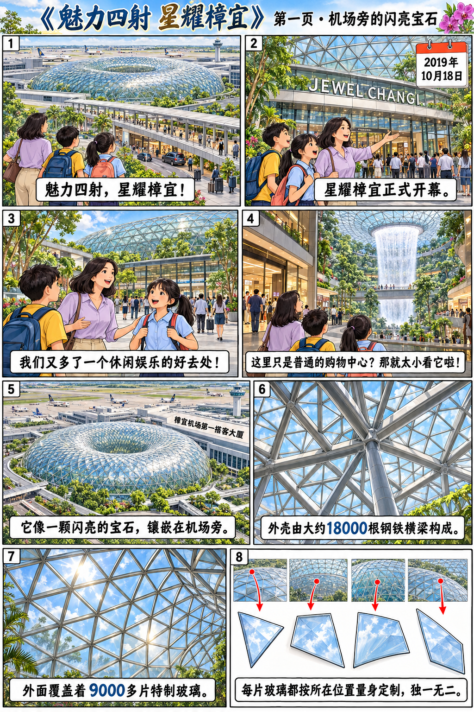
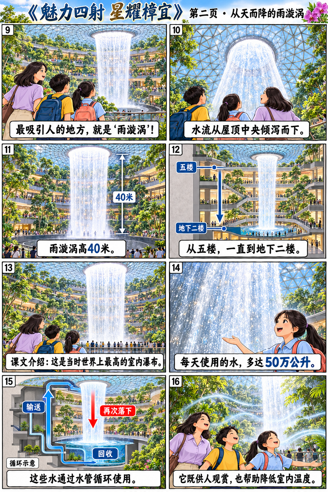
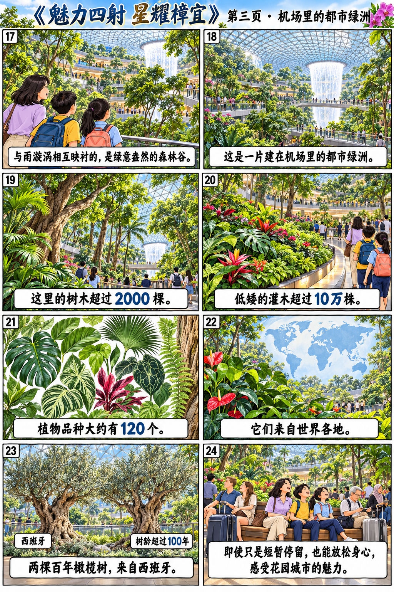
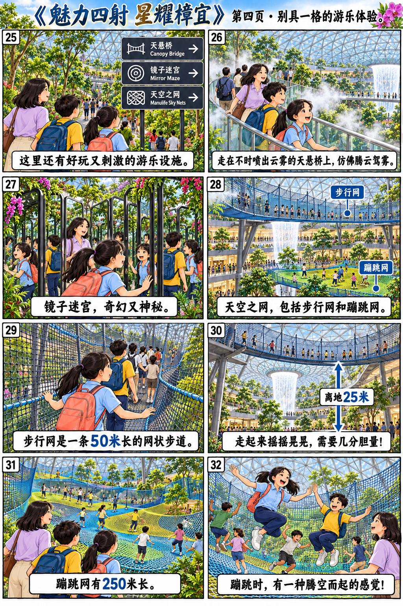
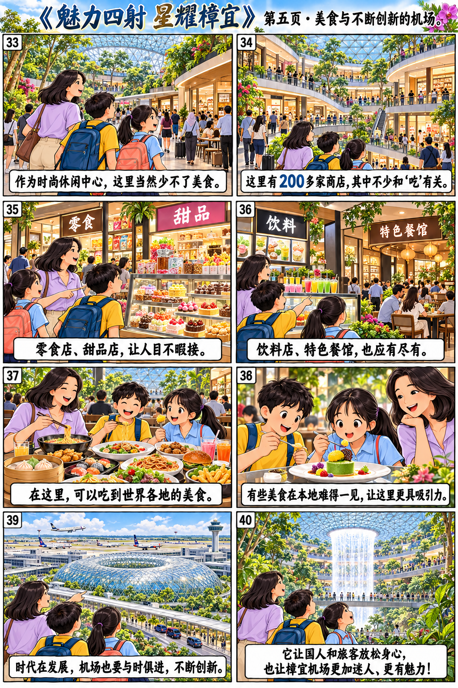

漫画与全文回读
五页原漫画完整保留。数字与事实按课文介绍理解。





第1段 · 休闲娱乐的好去处
星耀樟宜在2019年10月18日正式开幕，我们又多了一个休闲娱乐的好去处。不过，如果你以为它只是一个普通的购物中心，那就太小看它啦！
第2段 · 令人赞叹的外形设计
从空中看，闪亮的星耀樟宜像一颗宝石镶嵌在樟宜机场第一搭客大厦的旁边。它的外壳由大约1万8000根钢铁制成的横梁构成，覆盖着9000多片特制的玻璃。每一片玻璃看似一样，实际上都是独一无二的，都是按照它所处的位置量身定制的。
第3段 · 世界上最高的室内瀑布
“雨漩涡”是星耀樟宜最吸引人的地方。它高40米，从五楼一直到地下二楼，是目前世界上最高的室内瀑布。“雨漩涡”每天使用多达50万公升的水，这些水通过水管可循环使用，因此不会造成浪费。除了供人们观赏，“雨漩涡”还能帮助降低室内温度。
第4段 · 建在机场的室内绿洲
和“雨漩涡”相互映衬的是“森林谷”中绿意盎然的各种植物。这片室内森林中的树木超过2000棵，低矮的灌木则超过10万株。这里大约有120个植物品种，它们来自世界各地，其中有两棵超过100岁的橄榄树就来自西班牙。各国的访客即使只是短暂逗留，也可以在这里松懈身心，领略花园城市的魅力。
第5段 · 别具一格的游乐设施
星耀樟宜也有不少好玩又刺激的游乐设施。比如，不时喷出云雾的天悬桥，在上面行走好像腾云驾雾一般；以花园为主题的镜子迷宫充满奇幻而神秘的气息；有趣又特别的“天空之网”则令人步步惊心。“天空之网”包括步行网和蹦跳网。步行网是一条50米长的网状步道，距离地面25米高，走起来摇摇晃晃的，需要几分胆量；蹦跳网则有250米长，在上面蹦跳时，有一种腾空而起的感觉。
第6段 · 多种选择的各地美食
作为一个时尚休闲中心，星耀樟宜当然少不了美食。这里有200多家商店，其中不少和“吃”有关，零食店、甜品店、饮料店和特色餐馆应有尽有。在这里，你可以吃到世界各地的美食，有的甚至是本地难得一见的。这些美食使星耀樟宜更具吸引力。
第7段 · 与时俱进的机场
时代在发展，我们的机场也需要与时俱进，不断创新。星耀樟宜不仅为国人和旅客提供了一个放松身心的好去处，而且也让樟宜机场这一世界级的航空中心变得更加迷人，更有魅力！